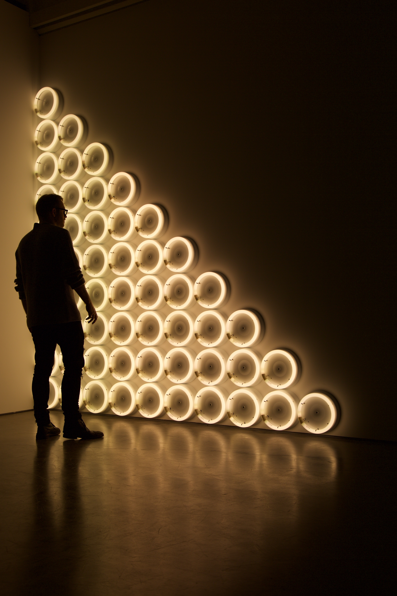

사학과 디지털인문예술의 융합을 생각한다면 저는 꽤 무한한 가능성을 지니고 있다고 생각합니다.
사학 내 고고미술이라던가, 지리, 문화재 등등을 고려한다며 어떠한 주제보다 매력적인 주제가 될 것이라고 생각하고 무엇보다 사람들 마음속에 내재되어있는 민족적 공통점이 그들의 관심을 이끌어주기 때문입니다.
민족적이란 단어는 사용하기 불편하지만 민족뿐만 아니라 외국인들도 보며 즐겁고 매력을 느낄만한 주제를 저는 만들 수 있다고 생각합니다.
그래서 현재 저는 디지털예술을 배워 어떻게 사학과 접목시킬 수 있을지 생각하고 있습니다.
사학은 국사로만 한정되는게 아닙니다.
세계 어느곳이나 역사는 존재합니다. 그것은 엄청난 장점이지요.
역사와 디지털예술의 접목은 실로 대답한 블루오션입니다.
